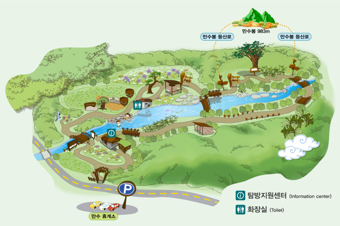
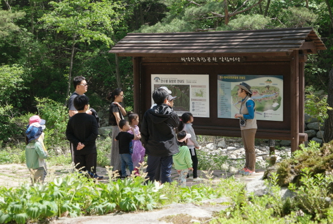
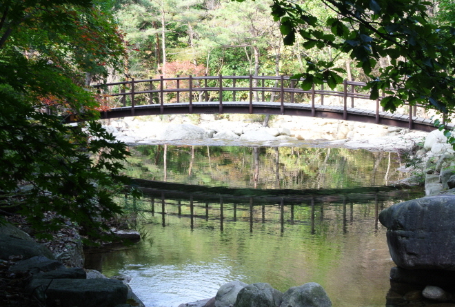
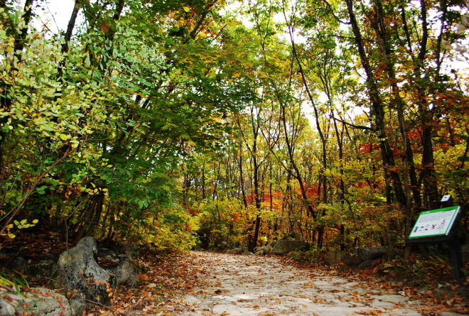
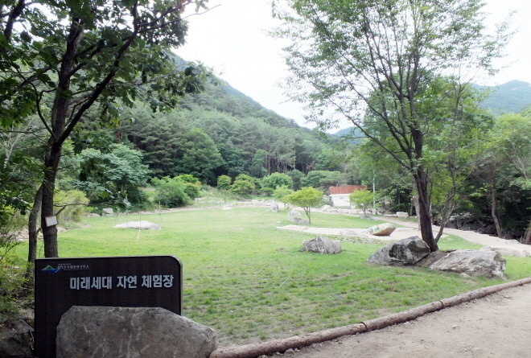
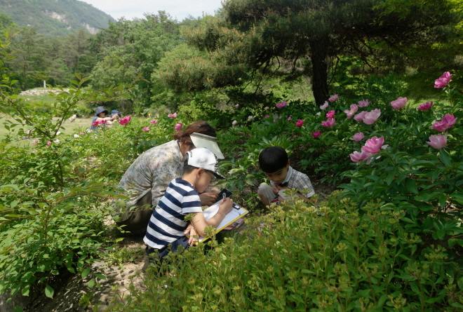
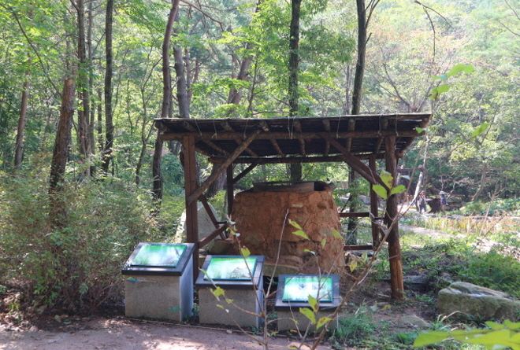
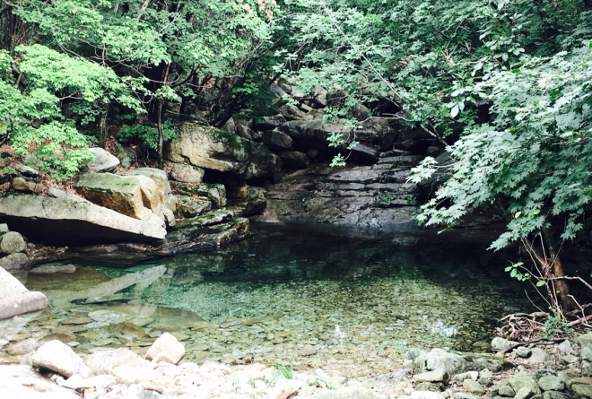
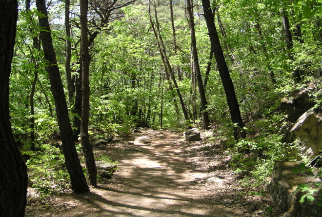

만수계곡자연관찰로









관찰로 소개
계절별로 피는 야생화를 볼 수 있는 월악산 대표 관찰로
거리 : 2.0km/순환
시간 : 1시간 소요
위치 : 만수봉 탐방로 입구
특징
만수계곡을 끼고 돌아오는 순환코스로 완만한 경사에 조릿대,
소나무림, 참나무림 등 다양한 숲속의 모습을 경험할 수 있음
시설
미래세대 체험장, 계곡토론장, 점자해설판, 송유채취 가마터,
숯가마터 등